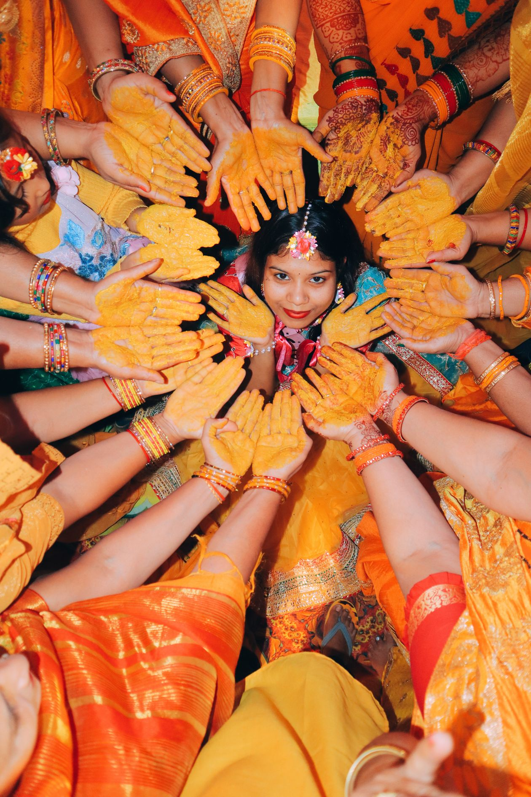
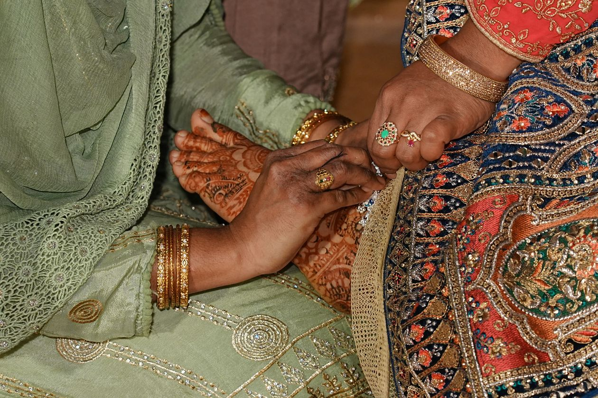

11.5–24 h
Coverage hours across the three printed shapes
Wedding photography & film · Mumbai · Est. 2017
I photograph South Asian weddings the way they are actually scheduled — block by block, haldi to vidaai. Every package here is built from one printed run-sheet: the block hours are fixed, the edit rate is fixed, and the price follows from both. No “price on application”, no second-meeting surprises.

11.5–24 h
Coverage hours across the three printed shapes
45–60 / hr
Edited photographs delivered per coverage hour
4–6 wks
Full gallery delivery, promised in writing
14 / year
Weddings accepted — the cap protects the edit
A shaadi is not one long day; it is a sequence of events, each with its own light, crowd and running time. These are the blocks I schedule and staff for, with the coverage hours I actually work at each. The planner below does its arithmetic with exactly these numbers.
| Event block | What happens — and what I am doing | Hours |
|---|---|---|
| Haldi | Turmeric ceremony, usually at home or in a courtyard, in morning light.Fast, close work — the paste goes everywhere, including near the cameras. | 2 h |
| Mehndi | Henna application, with music and family gathered around the bride.Detail work first — hands and patterns — then the room as it fills. | 3 h |
| Couple session | A quiet portrait sitting the day before, away from the crowd.The only block scheduled around light rather than ritual — late afternoon. | 2 h |
| Welcome evening | Guests arrive, the two families meet, an informal dinner.Reportage only. Nothing staged unless a family asks. | 2 h |
| Sangeet | Family performances and dancing — stage light and a moving floor.Two positions: stage-front for the performances, floor level for the dancing after. | 3.5 h |
| Getting ready & details | Dress, jewellery, the room before it fills; both partners where the schedule allows.With one photographer: the bride's side first, then the groom's, if the rooms are close. | 2 h |
| Ceremony — baraat to vidaai | The procession, the rituals at the mandap, and the farewell.The longest block and the least repeatable. Nothing here can be re-staged. | 4 h |
| Portraits & family groups | The couple, then the family list in printed order.A named family wrangler and a list capped at 20 groups keep this to ninety minutes. | 1.5 h |
| Reception | Stage greetings, dinner, speeches where held, and the floor afterwards.Mostly available light; the greeting line is worked in rotation so nobody queues twice. | 4 h |
Hours are coverage hours on the day, not editing hours. Editing is included in every package — it is what the delivery weeks in Table 2 are for.
Choose how many days your celebration runs, and whether you want a second photographer or film. Hours come from Table 1; photographs are estimated at the printed rate of 45–60 edited frames per coverage hour, rounded to the nearest ten; the price comes from Table 2 and the printed add-on rates. This is not a quote — it is the same sheet we would fill in together, made public.
1 · Celebration shape
2 · Add-ons, at printed rates
An honest note on the second photographer: they widen coverage — two rooms, two angles on the vidaai. They do not inflate the edit. The frame estimate stays the same, because one pair of eyes edits and signs every gallery.
Film is delivered 2 weeks after the photographs — the film's grade is matched to the finished gallery.
Check this dateEstimate only, from printed rates. The booking sheet we sign repeats these figures and adds travel at cost where it applies.
Three packages, one per shape. Everything not in the table — second photographer, film, albums, extra hours, travel — is priced underneath it, in the open.
| Package | Days & blocks | Hours | Edited photographs | Delivered | Price |
|---|---|---|---|---|---|
| Ek — One DayOne photographer | 1 day · 4 blocks | 11.5 h | 520–690 | 4 weeks | ₹85,000 |
| Do — Two DaysOne photographer + assistant | 2 days · 7 blocks | 20 h | 900–1,200 | 5 weeks | ₹1,45,000 |
| Teen — Three DaysOne photographer + assistant | 3 days · 9 blocks | 24 h | 1,080–1,440 | 6 weeks | ₹1,95,000 |
Not a best-of. One complete celebration, last November, run exactly as the sheet below. The frame counts are the delivered edit, event by event — they add up to the gallery the couple received.
Day 1 — Colour · Friday
HaldiBoth families in the hotel courtyard. Vikram's haldi ran twenty minutes over because his cousins would not stop; nobody minded, and the light held.
90frames in the edit
MehndiAnanya's henna took the full three hours. Pattern work first, then the room — including her grandmother inspecting the colour as it dried.
130frames in the edit
Day 2 — Portraits & music · Saturday
Couple sessionForty minutes at the old city gates before the crowds, then the hotel's north courtyard. The only quiet hour of the three days, and they knew it.
60frames in the edit
Welcome eveningTwo hundred guests arriving across two hours. Reportage only — the families meeting is the photograph; nothing was staged.
70frames in the edit
SangeetEleven family performances. Stage-front for those, then the floor for an hour of dancing that ended with both grandmothers on it.
210frames in the edit
Day 3 — The wedding day · Sunday
Getting ready & detailsAnanya's room from 6 a.m.; my assistant held the details — jewellery, the dress, her mother's hands fastening the necklace.
110frames in the edit
Ceremony — baraat to vidaaiThe baraat took the long way round the hotel. Pheras at midday, in hard light I had scouted the day before; the vidaai at dusk, unhurried.
330frames in the edit
Portraits & family groupsEighteen groups from the printed list, wrangled by Ananya's aunt in printed order. Done in eighty minutes, ten to spare.
90frames in the edit
ReceptionThe greeting line in rotation, dinner, two speeches, and the floor until the hotel asked us — politely, twice — to stop.
150frames in the edit
Totals for this wedding: 24 coverage hours · 1,240 edited photographs · highlight film 5 min 20 s · gallery delivered in week 6 of the 6 promised.


“We booked the photographer who showed us his arithmetic. On the days themselves we never saw it — we just never had to wonder where he was. The gallery arrived in the sixth week, as written, and the ceremony set is the one we keep going back to.”
Tell me the dates and the shape. If I am free, we talk; if I am not, I will say so in the first reply and suggest two photographers I trust.